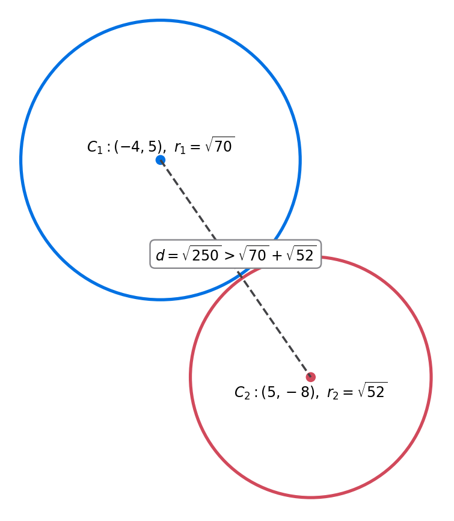

The circle \(C_1\) has equation \(x^2+y^2+8x-10y=29\).
(a) (i) Find the coordinates of the centre of \(C_1\). (ii) Find the exact value of the radius of \(C_1\). (3)
In part (b) you must show detailed reasoning. The circle \(C_2\) has equation \((x-5)^2+(y+8)^2=52\).
(b) Prove that the circles \(C_1\) and \(C_2\) neither touch nor intersect. (3)
Status: Lesson reviewed; the final geometric conclusion is made explicit below.
[6 marks]
Strategy and why. Convert the general circle equation into centre-radius form by completing both squares. Preserve the constants moved during completion, because the radius squared is the resulting right-hand side. The word exact means leave the radius as a surd.
Formula, definition or identity before substitution. Use \(x^2+8x=(x+4)^2-16\) and \(y^2-10y=(y-5)^2-25\). Standard form \((x-h)^2+(y-k)^2=r^2\) has centre \((h,k)\).
Full source-specific derivation. Substitution gives \[(x+4)^2-16+(y-5)^2-25=29.\] Move the constants to the right: \[(x+4)^2+(y-5)^2=70.\] Therefore the centre is \[\boxed{(-4,5)}\] and the exact radius is \[\boxed{\sqrt{70}}.\]
Diagnosis and why the rejected route fails. The lesson correction concerns answer form, not the square completion: adding \(8.366\ldots\) after \(\sqrt{70}\) is unnecessary when exact is demanded and risks implying a rounded replacement. A sign error in the centre also occurs if \((x+4)^2\) is read as centre +4 rather than -4.
Check back and interpretation. Expand the completed squares: \(x^2+8x+16+y^2-10y+25=70\), which rearranges to the original equation. Also, \((-4,5)\) makes both squared offsets zero, so it is the centre.
Recognition trigger. For circle completion, write the bracket sign and then reverse it when reading the centre. If exact is underlined, stop at a fraction, radical, or symbolic constant and do not append a decimal.
Strategy and why. Compare the distance between centres with the sum of radii. If the separation exceeds the sum, there is a positive gap between the circles, proving they neither touch externally nor intersect. The detailed-reasoning command requires the inequality and its geometric interpretation.
Formula, definition or identity before substitution. Use the distance formula \(d=\sqrt{(x_2-x_1)^2+(y_2-y_1)^2}\). For two disjoint external circles, \(d>r_1+r_2\). Equality would mean touching and a smaller value can permit intersection.
Full source-specific derivation. The centre displacement is \((9,-13)\), so \[d=\sqrt{9^2+(-13)^2}=\sqrt{250}.\] The sum of radii is \(\sqrt{70}+\sqrt{52}\). Numerically, \(d\approx15.811\) and \(r_1+r_2\approx15.578\), hence \[\sqrt{250}>\sqrt{70}+\sqrt{52}.\] Therefore the circles are separated by a positive gap and \(\boxed{\text{neither touch nor intersect}}\).
Diagnosis and why the rejected route fails. The observed work had the correct comparison idea but stopped before converting the inequality into the requested conclusion. Merely drawing circles close together is not proof, and comparing squared values without handling the cross term in \((r_1+r_2)^2\) can lead to an invalid shortcut.
Check back and interpretation. The gap is about \(15.811-15.578=0.233>0\), small but positive, matching a diagram in which the circles nearly meet. The exact centres and radii come directly from standard form.
Recognition trigger. For two-circle questions, write a three-case line: \(d>r_1+r_2\) separate, \(d=r_1+r_2\) external touch, \(d<r_1+r_2\) possible overlap; then identify the proven case in words.
